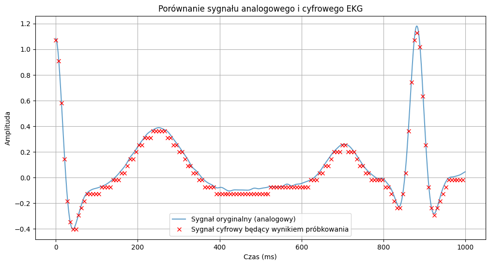

Laboratorium 1
Zakres Tematyczny
- Wprowadzenie w temat obliczeń numerycznych w języku Python
- Podstawy Pythona - Przypomnienie
- Podstawy użycia bibliotek:
- Numpy
- SciPy
- MatPlotLib
- Typy Danych w Numpy
- Błędy numeryczne i ich propagacja
- Biblioteka PyTorch
Obliczenia numeryczne w języku Python
Obliczenia numeryczne odgrywają kluczową rolę w wielu dziedzinach nauki i inżynierii. Python, dzięki swoim bibliotekom i cechom języka, stał się popularnym wyborem do przeprowadzania obliczeń numerycznych. Oto kilka powodów, dla których Python jest często wybierany do tego celu:
Czytelność: Składnia Pythona jest przejrzysta i zwięzła, co pozwala na łatwe pisanie i analizę kodu.
Biblioteki: Python posiada bogaty zestaw bibliotek do obliczeń numerycznych, takich jak:
- NumPy: Biblioteka do obliczeń numerycznych, oferująca wsparcie dla dużych tablic i macierzy wielowymiarowych oraz zestaw funkcji matematycznych do ich operowania.
- SciPy: Oparta na NumPy, jest to biblioteka służąca do bardziej zaawansowanych obliczeń i algorytmów naukowych.
- Pandas: Biblioteka do analizy danych, która dostarcza struktury danych i funkcje niezbędne do czyszczenia, agregacji i analizy danych.
Interaktywność: Narzędzia takie jak Jupyter Notebook pozwalają na interaktywne eksplorowanie danych i obliczeń, co jest niezmiernie użyteczne w analizie naukowej.
Integracja z innymi językami: Python może być łatwo zintegrowany z kodem napisanym w językach takich jak C, C++ czy Fortran, co pozwala na łączenie szybkości tych języków z elastycznością Pythona.
Wizualizacja Danych: Biblioteki takie jak Matplotlib, Seaborn czy Plotly umożliwiają tworzenie zaawansowanych wizualizacji, które są kluczowe do analizy wyników obliczeń numerycznych.
Wspólnota: Python ma ogromną społeczność, która stale tworzy i udostępnia nowe narzędzia, biblioteki i zasoby do obliczeń numerycznych.
Wszechstronność: Poza obliczeniami numerycznymi, Python jest językiem ogólnego zastosowania, co oznacza, że można go używać również do web developmentu, automatyki, analizy danych, sztucznej inteligencji i wielu innych zastosowań. Dzięki temu badacze i inżynierowie mogą korzystać z jednego języka do wielu różnych zadań.
Otwarte oprogramowanie: Python jest językiem open source, co oznacza, że jest dostępny za darmo i ma dużą społeczność deweloperów pracujących nad jego rozwojem.
Podstawy Pythona
Czym jest Python i jak działa
Python to wysokopoziomowy język programowania stworzony przez Guido van Rossuma i po raz pierwszy opublikowany w 1991 roku. Charakteryzuje się czytelną składnią, która pozwala programistom wyrażać koncepty w mniejszej ilości kodu niż w językach takich jak C++ czy Java.
Działanie Pythona na poziomie szczegółów można opisać w kilku kluczowych krokach. W skrócie, działanie Pythona polega na tym, że kod źródłowy jest interpretowany przez interpreter Pythona w kod bajtowy, który następnie jest wykonywany przez maszynę wirtualną Pythona.
Oto bardziej szczegółowy przegląd tego, jak to działa:
Kod źródłowy: Wszystko zaczyna się od kodu źródłowego, który piszesz w pliku .py.
Kompilacja do kodu bajtowego: Gdy uruchamiasz skrypt Pythona, interpreter (zazwyczaj CPython, który jest standardową implementacją Pythona) kompiluje ten kod źródłowy w kod bajtowy. Kod bajtowy to niskopoziomowe, platformowo niezależne przedstawienie twojego kodu źródłowego. Zostaje on zapisany w plikach .pyc w katalogu pycache.
Maszyna wirtualna Pythona (PVM): Po skompilowaniu kodu, kod bajtowy jest przekazywany do Maszyny Wirtualnej Pythona (PVM). To tu właściwe wykonanie kodu ma miejsce. PVM interpretuje i wykonuje kod bajtowy linia po linii.
Zarządzanie pamięcią: Python automatycznie zarządza pamięcią dzięki mechanizmowi zwanej “garbage collection”. Python posiada wbudowany licznik odniesień, który śledzi liczbę odniesień do każdego obiektu w pamięci. Gdy liczba odniesień do obiektu spada do zera, pamięć zajmowana przez obiekt jest automatycznie zwalniana. Dodatkowo, cykliczne odniesienia (gdzie obiekty odnoszą się nawzajem, ale nie są dostępne z żadnej innej części kodu) są wykrywane przez garbage collector i odpowiednio czyszczone.
Rozszerzenia w języku C: Jednym z mocnych stron Pythona jest jego zdolność do integrowania się z językami niższego poziomu, takimi jak C. Możesz pisać rozszerzenia w C, które są potem dostępne jako moduły w Pythonie. To pozwala na pisania bardziej wydajnych fragmentów kodu w C i korzystania z nich w Pythonie.
Biblioteki standardowe: Python ma bogate biblioteki standardowe, które oferują funkcje dla wielu powszechnych zadań, od pracy z plikami i sieciami po analizę danych i tworzenie interfejsów graficznych.
Interfejs API C: Python ma dobrze zdefiniowany API dla języka C, co pozwala na tworzenie rozszerzeń w C oraz na osadzanie interpretera Pythona w aplikacjach napisanych w C.
Funkcje i przekazywanie argumentów
W języku Python najprostsza deklaracja funkcji wygląda następująco:
def my_first_function():
passFunkcja ta nie przyjmuje ani nie zwraca niczego.
Funkcje mogą przyjmowac argumenty:
Argumenty pozycyjne: Są to najczęściej używane argumenty. Przekazujesz je w kolejności, w jakiej są wymienione w definicji funkcji.
def funkcja(a, b, c):
print(a, b, c)
funkcja(1, 2, 3) # 1 2 3
Argumenty nazwane (keyword arguments): Przekazujemy wartość, wskazując nazwę argumentu.
funkcja(a=1, c=3, b=2) # 1 2 3
Domyślne wartości argumentów: Możesz ustawić domyślne wartości dla niektórych (lub wszystkich) argumentów.
def funkcja(a, b=2, c=3):
print(a, b, c)
funkcja(1) # 1 2 3
funkcja(1, c=4) # 1 2 4Pętle
Generatory
Generator w Pythonie to specjalny rodzaj iteratora, który pozwala na generowanie wartości “na bieżąco” w miarę ich potrzeby, zamiast generować wszystkie wartości naraz i przechowywać je w pamięci. Dzięki temu generatory są bardziej wydajne pod względem alokacji pamięci. Ma to znaczenie zwłaszcza przy pracy z dużymi zbiorami danych.
Generatory tworzy się głównie w dwóch sposobach:
- Za pomocą funkcji i słowa kluczowego yield.
- Za pomocą wyrażeń generatora (podobnie jak list comprehension, ale w nawiasach okrągłych).
Przykład:
def even_numbers_generator(n):
for i in range(n):
if i % 2 == 0:
yield i
gen = even_numbers_generator(10)
for number in gen:
print(number)Oto inny przykład generatora, który zwraca nieskończony ciąg liczb w postaci ciągu geometrycznego o zadanej podstawie:
def geometric_sequence(a, r):
while True:
yield a
a *= r
# Przykład użycia
gen = geometric_sequence(1, 2) # podstawa 1, iloraz 2
for _ in range(5):
print(next(gen))Generatory są także często używane do wczytywania danych
Rozważmy generator danych dla symulacji sygnału fotopletyzmograficznego (PPG), który jest wykorzystywany do monitorowania tętna i saturacji tlenu w krwi. Sygnał PPG jest rejestrowany za pomocą czujnika optycznego umieszczonego na skórze, który wykrywa zmiany objętości krwi w naczyniach krwionośnych.
Nie zawsze mamy dostęp do takiego sygnału, co więcej - czasami chcemy sami wygenerowac sygnały o konkretnym kształcie, charakterystycznych zniekształceniach, aby przetestowac pewne algorytmy.
Możemy to zrobic z wykorzystaniem generatora:
import numpy as np
import matplotlib.pyplot as plt
def synthetic_ppg_generator(frequency=100):
"""
Generator syntetycznego sygnału PPG.
frequency: częstotliwość próbkowania sygnału [Hz]
"""
t = 0 # czas [s]
dt = 1.0 / frequency
while True:
# Modelujemy podstawowy kształt fali PPG przy użyciu równania
ppg_wave = np.abs(np.sin(t)) + 0.3 * np.sin(4 * np.pi * t) - 0.15 * np.sin(6 * np.pi * t)
yield ppg_wave
t += dt
# Przykład użycia:
ppg_gen = synthetic_ppg_generator(frequency=100)
# Wygenerowanie 5s sygnału PPG (500 próbek, ponieważ frequency=100Hz)
ppg_signal = [next(ppg_gen) for _ in range(500)]
# Rysujemy sygnał
plt.plot(ppg_signal)
plt.title("Syntetyczny sygnał PPG")
plt.xlabel("Próbka")
plt.ylabel("Amplituda")
plt.show()Wybrane biblioteki numeryczne Pythona
Biblioteka Numpy
NumPy to podstawowa biblioteka do obliczeń naukowych w Pythonie, która dostarcza wsparcie dla dużych, wielowymiarowych tablic i macierzy oraz wielu matematycznych funkcji do operacji na tych tablicach. Oto kilka najważniejszych cech biblioteki NumPy w kontekście metod numerycznych:
- Wektoryzacja:
- Pozwala na wykonywanie operacji na całych tablicach bez potrzeby stosowania pętli.
- Operacje wektoryzowane są znacznie bardziej wydajne niż ich odpowiedniki bazujące na pętlach, dzięki zastosowaniu optymalizowanych funkcji niskiego poziomu napisanych w językach takich jak C i Fortran.
Załóżmy, że chcemy dodać elementy dwóch dużych list do siebie. Możemy to zrobić na dwa sposoby:
- Tradycyjnie:
list1 = [1, 2, 3, 4, 5]
list2 = [5, 4, 3, 2, 1]
result = []
for i in range(len(list1)):
result.append(list1[i] + list2[i])
print(result)- Z wykorzystaniem biblioteki NumPy i wektoryzacji:
import numpy as np
array1 = np.array([1, 2, 3, 4, 5])
array2 = np.array([5, 4, 3, 2, 1])
result_array = array1 + array2
print(result_array)Zobaczmy teraz, co robi NumPy:
Gdy wykonujemy operację result_array = array1 + array2, NumPy wykonuje kilka kroków:
Sprawdzanie wymiarów: Najpierw NumPy sprawdzi, czy obie tablice mają taki sam kształt (shape). Jeśli nie mają, zostanie zgłoszony błąd (chyba że możliwe jest “rozgłaszanie” (broadcasting), ale to bardziej zaawansowana funkcjonalność).
Alokacja pamięci: NumPy alokuje pamięć dla wynikowej tablicy, która będzie miała taki sam kształt jak array1 i array2.
Operacje element po elemencie: Następnie, dla każdego indeksu w tablicach, NumPy dodaje wartości z array1 i array2, a wynik zapisuje w odpowiednim miejscu w result_array.
W rzeczywistości, proces jest bardziej skomplikowany i zoptymalizowany pod kątem wydajności. Dzięki wektoryzacji i natywnym, optymalizowanym funkcjom niskiego poziomu, operacje takie jak ta są wykonane bardzo szybko.
- Efektywna organizacja pamięci:
- Tablice
NumPysą jednorodne i przechowywane w ciągłych blokach pamięci. W przeciwieństwie do list w Pythonie, które są tablicami wskaźników, tabliceNumPyzajmują mniej miejsca i umożliwiają szybszy dostęp do danych. - Obsługuje też widoki (views), które pozwalają na dostęp do danych bez ich kopiowania, co jest szczególnie przydatne w dużych zbiorach danych.
- Paralelizacja:
- Chociaż sama
NumPynie obsługuje paralelizacji na poziomie wielu wątków, jej operacje są zoptymalizowane do wykorzystania jednostek SSE/AVX dostępnych w nowoczesnych procesorach, co przyspiesza wiele operacji. - Dodatkowo, biblioteki takie jak
DaskczyNumbapozwalają na łatwą paralelizację i kompilację operacjiNumPydla jeszcze większej wydajności.
- Wsparcie dla operacji algebry liniowej, transformacji Fouriera i funkcji statystycznych:
- Dostarcza funkcje do rozwiązywania układów równań, obliczania wartości własnych, dekompozycji oraz innych kluczowych operacji algebry liniowej.
- Wbudowane funkcje do operacji na liczbach zespolonych oraz do wykonywania transformacji Fouriera.
- Wsparcie dla różnych typów danych:
- Obsługuje szeroki zakres typów danych, w tym typy liczbowe (całkowite, zmiennoprzecinkowe, zespolone) oraz typy dat i czasów.
- Interoperacyjność:
- Może współdziałać z bibliotekami napisanymi w innych językach, takimi jak C, C++ czy Fortran, co pozwala na wykorzystanie istniejących, optymalizowanych kodów.
- Łatwa integracja z innymi bibliotekami do analizy danych, takimi jak
pandasczySciPy.
- Rozszerzalność:
- Możliwość tworzenia własnych typów danych i funkcji
ufunc, które zachowują się jak wbudowane operacje wektoryzowane.
W kontekście metod numerycznych, NumPy dostarcza solidne narzędzie do szybkiego i wydajnego przetwarzania danych oraz implementacji algorytmów numerycznych w Pythonie.
Biblioteka Scipy
Drugą z wykorzystywanych przez nas bibliotek jest biblioteka SciPy - rozbudowana biblioteka służąca do obliczeń naukowych i inżynierskich w języku Python. Biblioteka ta bazuje na NumPy, ale dodaje sporo rzeczy “od siebie”. Przejdźmy przez jej najważniejsze moduły:
Moduł do optymalizacji (
scipy.optimize): Narzędzia do znajdowania korzeni równań i minimalizacji funkcji.Moduł do algebry liniowej (
scipy.linalg): Funkcje do rozwiązywania równań liniowych, obliczania wartości własnych itp.Moduł do przetwarzania sygnałów (
scipy.signal): Narzędzia do analizy, projektowania i przetwarzania sygnałów.Moduł do analizy obrazów (
scipy.ndimage): Funkcje do przetwarzania i analizy obrazów.Moduł do statystyki (
scipy.stats): Obszerna kolekcja funkcji do statystyki i rozkładów prawdopodobieństwa.Moduł do całkowania (
scipy.integrate): Narzędzia do całkowania funkcji i równań różniczkowych.
Załóżmy, że chcemy znaleźc minimum jakiejś funkcji. Zobaczmy jak możemy to zrobic z wykorzystaniem biblioteki SciPy:
from scipy.optimize import minimize
# Definiujemy funkcję
def f(x):
return x**2 + 6*x + 5
# Znajdujemy minimum funkcji zaczynając od punktu x=0
result = minimize(f, x0=0)
# Wypisujemy wynik
print(f"Minimum value of f(x) is {result.fun} at x = {result.x}")Przeanalizujmy jeszcze jeden, bardzo ważny przykład, który łączy w sobie wykorzystanie biblioteki SciPy oraz pewne specyficzne cechy wykonywania obliczeń numerycznych.
W szpitalu są dwie grupy pacjentów: osoby z grypą i osoby z zatruciem pokarmowym. Pierwszego dnia przyszło 5 pacjentów z grypą i 3 z zatruciem pokarmowym. Wszyscy razem otrzymali 23 tabletki paracetamolu. Drugiego dnia przyszło 2 osoby z grypą i 3 z zatruciem pokarmowym, a łączna liczba tabletek paracetamolu, które dostali, wynosiła 13. Jaką dawkę paracetamolu otrzymuje pacjent z grypą oraz pacjent z zatruciem pokarmowym?
Załóżmy, że:
- Dawka dla pacjenta z grypą to \(x\) tabletek.
- Dawka dla pacjenta z zatruciem to \(y\) tabletek.
Na podstawie powyższych informacji uzyskujemy układ równań:
\(5x+3y=23\) (pierwszy dzień)
\(2x+3y=13\) (drugi dzień)
Rozwiążmy zatem ten układ równań, korzystając z biblioteki SciPy:
import numpy as np
from scipy.linalg import solve
# Macierz współczynników
A = np.array([[5, 3], [2, 3]])
# Wektor wyników
b = np.array([23, 13])
# Rozwiązujemy układ równań
x, y = solve(A, b)
print(f"Dawka dla pacjenta z grypą: {x:.2f} tabletki")
print(f"Dawka dla pacjenta z zatruciem pokarmowym: {y:.2f} tabletki")Biblioteka MatPlotLib
Biblioteka matplotlib to jedno z najpopularniejszych narzędzi do tworzenia wizualizacji danych w Pythonie. Dzięki niej można tworzyć różnorodne wykresy, od podstawowych liniowych czy słupkowych, po bardziej zaawansowane jak histogramy, wykresy punktowe czy konturowe.
Najważniejsze cechy biblioteki matplotlib:
- Wszechstronność: Możliwość tworzenia wielu typów wykresów.
- Dostosowywalność: Wielkie możliwości konfiguracji wyglądu wykresów.
- Interaktywność: Możliwość tworzenia interaktywnych wizualizacji.
- Integracja z innymi bibliotekami:
matplotlibintegruje się z wieloma innymi bibliotekami Pythona takimi jakpandasczynumpy. - Podmoduł
pyplot: Zapewnia interfejs podobny do MATLAB-a, co jest przydatne dla osób znających to środowisko. - Wsparcie dla różnych formatów: Możliwość zapisu w wielu popularnych formatach graficznych jak PNG, PDF, SVG i innych.
Stworzymy wykres przedstawiający funkcje sinus i cosinus na tym samym rysunku z dodatkową konfiguracją:
import numpy as np
import matplotlib.pyplot as plt
# Dane
x = np.linspace(0, 2 * np.pi, 400)
y1 = np.sin(x)
y2 = np.cos(x)
# Tworzenie wykresu
plt.figure(figsize=(10,6)) # ustawienie rozmiaru wykresu
plt.plot(x, y1, label='sin(x)', color='blue', linewidth=2) # wykres funkcji sinus
plt.plot(x, y2, label='cos(x)', color='red', linestyle='--', linewidth=2) # wykres funkcji cosinus
# Dodanie tytułu i etykiet osi
plt.title('Funkcje sinus i cosinus')
plt.xlabel('x')
plt.ylabel('y')
# Dodanie siatki i legendy
plt.grid(True, which='both', linestyle='--', linewidth=0.5)
plt.legend()
# Wyświetlenie wykresu
plt.tight_layout() # automatyczne dopasowanie elementów wykresu
plt.show()Ten kod utworzy wykres funkcji sinus i cosinus.
Przeanalizujmy bardziej efektowny przykład:
Załóżmy, że chcemy przedstawic komuś koncepcję trzech sygnałów oscyloskopowych:
- sygnał sinusoidalny
- sygnał prostokątny
- sygnał trójkątny
Stworzymy wykres tych sygnałów wraz z opisem, skalą oraz powiększeniem fragmentu jednego z sygnałów.
import numpy as np
import matplotlib.pyplot as plt
import matplotlib.patches as patches
# Generowanie sygnałów
t = np.linspace(0, 5 * np.pi, 1000)
sin_wave = np.sin(t)
square_wave = np.sign(sin_wave)
triangle_wave = 2 * np.arcsin(sin_wave) / np.pi
# Tworzenie głównego wykresu
fig, ax = plt.subplots(figsize=(12, 8))
ax.plot(t, sin_wave, label="Sinusoidalny", color="blue")
ax.plot(t, square_wave, label="Prostokątny", color="red", linestyle="--")
ax.plot(t, triangle_wave, label="Trójkątny", color="green", linestyle="-.")
# Ustawienia wykresu
ax.set_title("Sygnały oscyloskopowe")
ax.set_xlabel("Czas")
ax.set_ylabel("Amplituda")
ax.grid(True, linestyle='--', alpha=0.7)
ax.legend()
# Powiększenie fragmentu wykresu
axins = ax.inset_axes([0.2, 0.2, 0.3, 0.3]) # [x, y, width, height]
axins.plot(t, sin_wave, color="blue")
axins.plot(t, square_wave, color="red", linestyle="--")
axins.plot(t, triangle_wave, color="green", linestyle="-.")
x1, x2, y1, y2 = 7, 8, -1.5, 1.5 # zakres fragmentu do powiększenia
axins.set_xlim(x1, x2)
axins.set_ylim(y1, y2)
axins.grid(True, linestyle='--', alpha=0.7)
# Zaznaczenie fragmentu do powiększenia na głównym wykresie
rect = patches.Rectangle((x1, y1), x2-x1, y2-y1, edgecolor='gray', facecolor='none', linestyle=":")
ax.add_patch(rect)
ax.indicate_inset_zoom(axins, edgecolor="gray")
plt.tight_layout()
plt.show()Ten kod generuje wykres trzech różnych sygnałów oscyloskopowych wraz z legendą, skalą i powiększeniem fragmentu wykresu, pokazującym interesujący obszar tych sygnałów. Zakres powiększenia został zaznaczony na głównym wykresie szarą linią przerywaną.
Biblioteka PyTorch
PyTorch to otwartoźródłowa biblioteka do uczenia maszynowego, stworzona głównie przez Facebook’s AI Research lab. PyTorch jest znany ze swojej elastyczności i dynamicznej kompilacji, co sprawia, że jest szczególnie użyteczny w badaniach. Umożliwia budowanie różnego rodzaju modeli głębokiego uczenia oraz oferuje wsparcie dla GPU, co przyspiesza obliczenia.
Przeanalizujmy przykład wykorzystania PyTorch do rozwiązania problemu matematycznego polegającego na znalezieniu minimum funkcji kwadratowej. W tym celu użyjemy koncepcji różniczkowania i spadku gradientu (dowiecie się o tym na kolejnych zajęciach z naszego przedmiotu, proszę chwilowo się nie martwic), ale bez wchodzenia głęboko w kontekst uczenia maszynowego.
Problem:
Znajdź wartość \(x\), która minimalizuje funkcję \(f(x) = x^2 + 4x + 4\).
Rozwiązanie:
- Inicjalizuj zmienną \(x\) z losową wartością.
- Oblicz wartość funkcji \(f\) dla aktualnej wartości \(x\).
- Oblicz gradient funkcji względem \(x\) (to informuje nas, w którym kierunku powinniśmy aktualizować \(x\) w celu zminimalizowania \(f\)).
- Aktualizuj \(x\) w kierunku przeciwnym do gradientu.
- Powtarzaj kroki 2-4 przez pewną liczbę iteracji lub do osiągnięcia pewnego progu dokładności.
Kod:
import torch
# Krok 1: Inicjalizuj zmienną x z losową wartością i wymaganiem obliczania gradientu.
x = torch.randn(1, requires_grad=True)
# Definicja optymalizatora
learning_rate = 0.1
optimizer = torch.optim.SGD([x], lr=learning_rate)
# Iteracje optymalizacji
for iteration in range(100):
# Krok 2: Oblicz wartość funkcji f dla aktualnej wartości x.
f = x**2 + 4*x + 4
# Krok 3: Oblicz gradient funkcji
f.backward()
# Krok 4: Aktualizuj x w kierunku przeciwnym do gradientu.
optimizer.step()
# Zeruj gradienty dla następnej iteracji.
optimizer.zero_grad()
print(f'Minimum funkcji f(x) = x^2 + 4x + 4 jest w punkcie x = {x.item()}')W tym przykładzie korzystamy z PyTorch do obliczenia gradientów i optymalizacji wartości \(x\), aby zminimalizować funkcję \(f\). Nie używamy tu żadnych zaawansowanych koncepcji uczenia maszynowego, ale skupiamy się na podstawach różniczkowania i optymalizacji.
No dobra, ale dlaczego zatem nie używamy do tego po prostu biblioteki NumPy. Z kilku powodów, niestety niewidocznych gołym okiem na tak prostym przykładzie. Porównując podejście z wykorzystaniem NumPy, do podejścia z wykorzystaniem PyTorch-a, możemy określic pewne różnice (oraz co za tym idzie cechy biblioteki PyTorch)
- Automatyczne różniczkowanie:
- PyTorch: PyTorch oferuje automatyczne różniczkowanie dzięki
backward(). Pozwala to na obliczenie gradientu funkcji bez konieczności ręcznego określania jego formy. - NumPy: W NumPy musiałbyś ręcznie wyznaczyć gradient funkcji, co dla naszej funkcji kwadratowej jest proste, ale dla bardziej skomplikowanych funkcji może być trudne.
- PyTorch: PyTorch oferuje automatyczne różniczkowanie dzięki
- Wsparcie dla GPU:
- PyTorch: PyTorch może przeprowadzać obliczenia zarówno na CPU, jak i GPU. Dzięki temu operacje mogą być przyspieszone dla dużych zbiorów danych lub skomplikowanych modeli.
- NumPy: NumPy działa tylko na CPU. Istnieją biblioteki, takie jak CuPy, które oferują podobne do NumPy interfejsy na GPU, ale standardowy NumPy nie oferuje tej funkcjonalności.
- Aktualizacja zmiennych:
- PyTorch: Optymalizatory w PyTorch (np.
torch.optim.SGD) automatycznie aktualizują wartość zmiennych w odpowiedzi na obliczone gradienty. - NumPy: Musiałbyś ręcznie zaktualizować wartość zmiennej na podstawie gradientu, np.
x = x - learning_rate * gradient.
- PyTorch: Optymalizatory w PyTorch (np.
- Integracja z głębokim uczeniem:
- Jeśli w przyszłości chciałbyś rozbudować rozwiązanie, np. dodać warstwy sieci neuronowej, PyTorch oferuje gotowe do użycia narzędzia i struktury, które ułatwiają to zadanie.
- W przypadku NumPy musiałbyś samodzielnie zaimplementować wiele elementów związanych z sieciami neuronowymi.
Chociaż dla naszego prostego problemu różnice te mogą wydawać się niewielkie, dla bardziej skomplikowanych problemów i większych zbiorów danych zalety PyTorch stają się bardziej widoczne.
Jeśli jednak chodzi o nasz konkretny problem z minimalizacją funkcji kwadratowej, można go łatwo rozwiązać przy użyciu NumPy, obliczając ręcznie gradient i aktualizując wartość \(x\) w pętli. PyTorch jest tutaj używany bardziej jako demonstracja jego możliwości niż konieczność.
Typy danych
Kluczową strukturą danych w numpy jest ndarray (n-wymiarowa tablica danych), która pozwala na przechowywanie i operacje na dużych zbiorach danych w efektywny sposób.
Każda tablica ndarray ma atrybut o nazwie dtype, który wskazuje typ danych przechowywanych w tablicy. dtype definiuje:
- Rodzaj danych (np. liczba całkowita, liczba zmiennoprzecinkowa, boolean, itp.).
- Ilość pamięci potrzebną do przechowywania jednego elementu tego typu.
- Zakres wartości, jakie można w niej przechowywać.
- Precyzję (dla liczb zmiennoprzecinkowych).
Przedstawmy kilka podstawowych typów danych w bibliotece NumPy :
Liczby całkowite:
int8,int16,int32,int64(odpowiednio 8, 16, 32, 64 bity). Dla liczb bez znaku:uint8,uint16,uint32,uint64.Liczby zmiennoprzecinkowe:
float16,float32,float64. Reprezentują liczby zmiennoprzecinkowe o różnej precyzji.Liczby zespolone:
complex64,complex128.Boolean:
bool.Stringi i unicode:
string_,unicode_.
Użyte przez nas typy danych ma bezpośredni wpływ na ilość pamięci przydzielanej dla tablicy:
Rozmiar: Ilość pamięci potrzebna do przechowywania jednej tablicy jest równa ilości elementów w tablicy pomnożonej przez rozmiar jednego elementu (zdefiniowanego przez typ danych). Na przykład, tablica 1000 elementów typu
int8będzie zajmować 1000 bajtów pamięci.Operacje: Wybór odpowiedniego typu danych może wpłynąć na szybkość i dokładność operacji. Na przykład, operacje na typach z mniejszą precyzją (jak
float16) mogą być szybsze, ale mniej dokładne.Zakres: Mniejsze typy danych mają ograniczony zakres wartości, które mogą przechowywać. Na przykład,
int8może przechowywać wartości od -128 do 127.
Dlatego ważne jest, aby wybrać odpowiedni typ danych w zależności od potrzeb. Jeśli potrzebujesz zaoszczędzić pamięć i operacje nie wymagają dużej precyzji, możesz wybrać mniejszy typ danych. Jeśli jednak dokładność jest kluczowa, lepiej jest użyć większego, mimo większego zużycia pamięci.
Błędy numeryczne i ich propagacja
Rozpocznijmy od dwóch definicji:
Sygnał Analogowy: - Sygnał w postaci wielkości fizycznej zmieniającej się w sposób ciągły, a nie skokowo. Jego wartości mogą zostać określone w każdej chwili.
Sygnał Cyfrowy: - Przeciwieństwem sygnału analogowego jest sygnał skwantowany, nazywany również dyskretnym. Kwantyzacja to działanie, które sygnał analogowy (liczbę rzeczywistą, o nieskończonym liczbie wartości w danym przedziale) przekształca w ograniczony zbiór liczb całkowitych, dzięki czemu możliwa jest dalsza obróbka tego sygnału przy pomocy komputera
Przykładem niech będzie sygnał EKG na obrazku poniżej

Konwersja sygnału analogowego do cyfrowego zachodzi zawsze z pewną ograniczoną dokładnością. Dokładność ta wynika ze skończonej precyzji reprezentacji liczb w systemach cyfrowych. Nazywamy to błędem kwantyzacji. Wiąże się to bezpośrednio z typami danych. Drugim typem błędu, który nas interesuje to błąd maszynowy.
Błąd kwantyzacji: Pojawia się, gdy sygnał ciągły lub sygnał o dużej rozdzielczości jest przetwarzany do ograniczonej liczby dyskretnych poziomów. Na przykład, gdy analogowy sygnał dźwiękowy jest digitalizowany, jego wartości amplitudy są zaokrąglane do najbliższego poziomu kwantyzacji. Błąd kwantyzacji odnosi się do różnicy między rzeczywistą wartością sygnału a jego kwantyzowaną wartością.
Błąd maszynowy: Jest to najmniejsza wartość, która może być reprezentowana w danym systemie numerycznym. Dla standardu liczby zmiennoprzecinkowej IEEE 754 (często używany w komputerach), błąd maszynowy określa minimalną różnicę między “1” a następną wartością, która może być reprezentowana. Błąd maszynowy jest ograniczeniem maszynowym i jest bezpośrednio związany z precyzją, z jaką liczby są reprezentowane w komputerze.
- Oba typy błędów wynikają z ograniczeń w reprezentowaniu liczb.
- W kontekście przetwarzania sygnałów, błąd kwantyzacji często jest bardziej widoczny, ponieważ wpływa bezpośrednio na jakość rekonstrukcji sygnału. Jednak w obliczeniach numerycznych, błąd maszynowy może kumulować się w wielu operacjach i wpływać na dokładność wyników.
- W praktycznych zastosowaniach DSP (cyfrowe przetwarzanie sygnałów), błąd kwantyzacji jest często większym problemem niż błąd maszynowy, chyba że algorytm wymaga dużej precyzji w obliczeniach matematycznych.
Błąd maszynowy, zwany także epsilonem maszynowym możemy w praktyce wyznaczyc korzystając z definicji, że jest to taka liczba, że:
\[1 + \epsilon \neq 1 \tag{1}\]
w arytmetyce zmiennoprzecinkowej komputera. Dla typu float64 w bibliotece NumPy (co jest standardowym formatem liczby zmiennoprzecinkowej o podwójnej precyzji), epsilon maszynowy wynosi około \(2.220446049250313 \cdot e^−16\).
Zadania
Zadanie 1 - Epsilon Maszynowy
Korzystając z definicji epsilonu maszynowego napisz funkcję w języku Python, która oblicza epsilon maszynowy danego typu danych w bibliotece NumPy. Pamiętaj o deklaracji typu danych w obliczeniach. Zalecane jest skorzystanie z pętli.
Zadanie 2 - Paralelizacja
Poniżej przedstawiony jest kod, który mierzy czas wykonania pewnej operacji. Wykonaj analogiczne działanie z wykorzystaniem biblioteki NumPy, zmierz czas konieczny do jego wykonania, porównaj ten czas z czasem wykonania tradycyjnej metody.
import math
import time
# Tworzymy listę wartości od 0 do 10^6
values = [i * 0.001 for i in range(1000000)]
start_time = time.time()
sin_values = []
for val in values:
sin_values.append(math.sin(val))
end_time = time.time()
print(f"Traditional loop took {end_time - start_time} seconds")Zadanie 3 - Kalkulator Oszczędnościowy
Twoim zadaniem jest stworzenie prostego kalkulatora oszczędnościowego, który pomoże użytkownikowi przewidzieć, ile pieniędzy uda mu się zaoszczędzić w ciągu określonego czasu.
Wymagania:
- Użytkownik powinien mieć możliwość podania początkowej kwoty oszczędności (może to być 0).
- Użytkownik powinien podać miesięczną kwotę, którą planuje oszczędzać.
- Użytkownik powinien podać roczne oprocentowanie swojego konta oszczędnościowego (np. 3% oznaczać będzie 0.03).
- Użytkownik powinien podać liczbę lat, przez które planuje oszczędzać.
Twoim zadaniem jest:
- Obliczenie końcowej sumy oszczędności po określonym czasie, uwzględniając oprocentowanie.
- Wykorzystanie odpowiednich typów danych w Pythonie do reprezentowania tych wartości (np. float dla kwot i oprocentowania, int dla liczby lat).
Formuła oszczędności z oprocentowaniem składanym miesięcznie:
\[A = P \left(1 + \frac{r}{n}\right)^{nt} + PMT \left[ \frac{\left(1 + \frac{r}{n}\right)^{nt} - 1}{\frac{r}{n}} \right]\]
Gdzie:
- A to końcowa suma oszczędności.
- P to początkowa suma oszczędności.
- r to roczna stopa procentowa (jako ułamek, np. 3% to 0.03).
- n to liczba okresów kapitalizacji w ciągu roku (dla kapitalizacji miesięcznej n=12n=12).
- t to liczba lat oszczędzania.
- PMT to stała miesięczna wpłata.